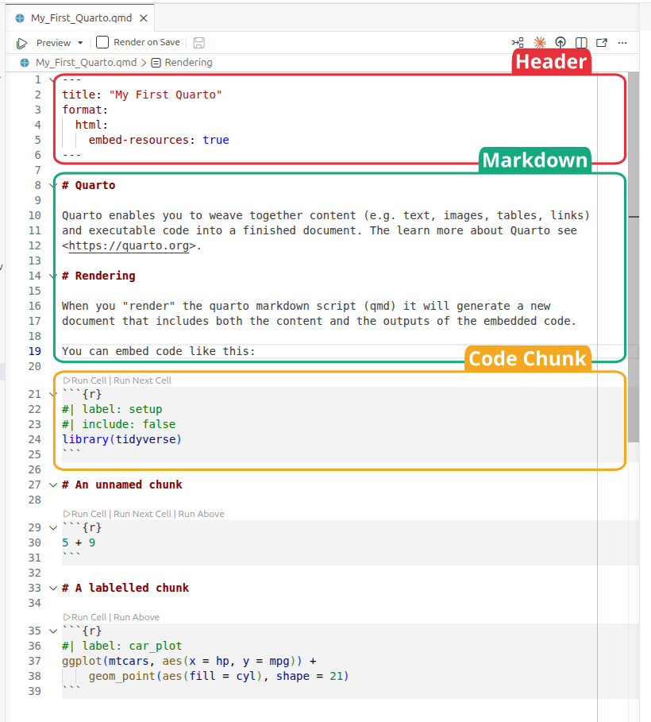
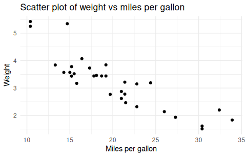
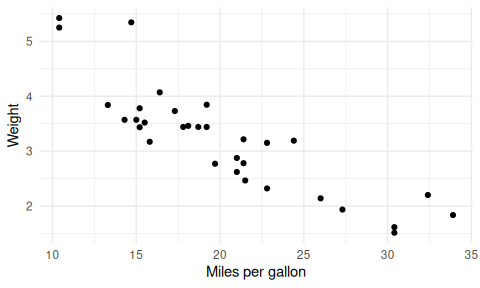
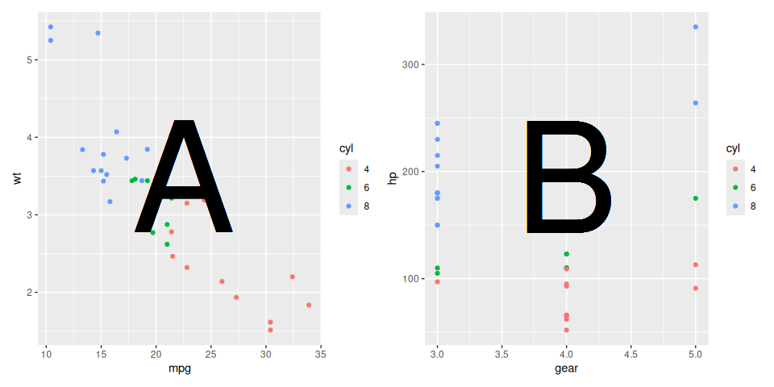
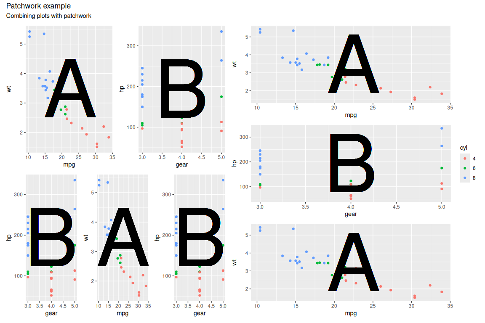

library(tidyverse)
library(knitr)
library(kableExtra)
library(DT)
library(patchwork)Session 8 – Quarto
Instructor notes
NoteLearning objectives
- Learn how to generate an html/pdf report using Quarto and Positron
- Write formatted text, tables, links and images using Markdown
- Embed executable R code in a document and control how its output appears
- Present tables and figures in a report using knitr, kableExtra, DT and patchwork
What is Quarto?
- Combines executable code, its output and text in one document
- Renders to HTML, PDF, Word, slides; R, Python, Julia, Observable JS
- Made by Posit – full guide at https://quarto.org/docs/guide/
Packages for this session
knitris the engine that runs the chunks – Quarto loads it for you; load it explicitly only to avoid typingknitr::kable()kableExtra– table formatting on top ofkable;DT– interactive tables;patchwork– combine ggplots
Creating a Quarto document
File–>New File–>Quarto Document- Change the title, save as “My_First_Quarto.qmd” in
Bioinformatics_Workshop - Extension is
.qmd
The basic components of a Quarto document
- Header - metadata and instructions related to rendering the document
- Markdown sections - Text, images, links, tables, lists to be included in the report
- Code chunks - Code chunks to be executed and the output included in the report

Show the components of a Quarto document here
Header
- YAML, fenced top and bottom by
--- - Only
formatis required; everything else is metadata or render instructions
---
title: "My First Quarto Document"
author: "Ashley Sawle"
format: html
date: "2026-08-21"
---- Alternatives to
html:pdf,docx,revealjs(slides)
Markdown sections
- Markdown – lightweight, platform independent markup; formatting is not visible until rendered
- Full syntax reference: Markdown basics
Inline text formatting
- Surround the text with the symbol pair; any amount of text can sit between
This is *italics* or This is _italics_ → This is italics
Double asterisks/underscores for bold:
This **is bold**orThis __is bold__→ This is boldTilde (
~) for subscript:This is ~subscript~→ This is subscriptCaret (
^) for superscript:This is ^superscript^→ This is superscriptDouble tilde (
~) for strikethrough:~~This is strikethrough~~→This is strikethroughBackticks (
`) for “code” font:This is `code`→ This iscode
Headings
#at the start of the line – one#is the top level (document title)- Say the word: octothorp
# Section
# Sub-section
## Sub-sub section
### Sub-sub-sub section
#### Sub-sub-sub-sub sectionAdding a table of contents
- This is a render instruction, so it goes in the header yaml
format:
html:
toc: true- Defaults to level 3 and a floating right-hand position
format:
html:
toc: true
toc-depth: 4
toc-location: left- Gotcha – Quarto option names use hyphens, not underscores:
toc-depth
Tab sets
- Fenced div with class
.panel-tabset; each sub-heading inside becomes a tab
::: {.panel-tabset}
### Bold
Bold is achieved with double asterisks e.g. `**bold**` is rendered as **bold**.
### Italics
Italics is achieved with a single asterisk e.g. `*italics*` is rendered as *italics*.
### Strikethrough
Strikethrough is achieved with two tildes e.g. `~~strikethrough~~` is rendered as
~~Strikethrough~~.
:::
### Next section
The tab set ends when the div is closed.is rendered as:
Bold is achieved with double asterisks e.g. **bold** is rendered as bold.
Italics is achieved with a single asterisk e.g. *italics* is rendered as italics.
Strikethrough is achieved with two tildes e.g. ~~strikethrough~~ is rendered as Strikethrough.
Next section
The tab set ends when the div is closed.
- Border/background here is styling for these notes only, not Quarto default
Line breaks
- Consecutive lines are concatenated into one paragraph – end the line with two spaces or a backslash to force a break
This is the first line
There are no spaces after the end of the previous lineis rendered as:
This is the first line There are no spaces after the end of the previous line
where as:
This is the first line\
There are no spaces after the end of the previous lineis rendered as:
This is the first line
There are no spaces after the end of the previous line
Lists
Unordered lists
*,-or+– all identical; nest by indenting 4 spaces
* Cricket
* Rugby
* Football
* English Premier League
* La Liga
* Serie A
* Basketball
* Volleyball
* Hockeyis rendered as:
- Cricket
- Rugby
- Football
- English Premier League
- La Liga
- Serie A
- Basketball
- Volleyball
- Hockey
Ordered lists
- Number for numeric,
afor letters,ifor roman numerals; indent to nest
1. Cat
2. Ferret
3. Dog
a. Terriers
i. Jack Russell
ii. Airedale
iii. Yorkshire
iv. West Highland
b. Labradors
c. Spaniels
4. Goldfishis rendered as:
- Cat
- Ferret
- Dog
- Terriers
- Jack Russell
- Airedale
- Yorkshire
- West Highland
- Labradors
- Spaniels
- Terriers
- Goldfish
- The actual numbers/letters don’t matter – order is worked out at render time
1. Cat
1. Ferret
5. Dog
a. Terriers
i. Jack Russell
i. Airedale
i. Yorkshire
i. West Highland
b. Labradors
a. Spaniels
1. GoldfishLinks
- Square brackets = text shown, round brackets = destination
[This is the text](this_is_the_link)External links
[session 6 document](session6.html) → session 6 document
[The Quarto guide](https://quarto.org/docs/guide/) → The Quarto guide
Internal links to sections
- Quarto auto-generates an id from the heading text – usually no tag needed
[link to header](#markdown-sections)
- Custom id via a tag on the heading:
# Markdown sections {#markdown-header}
[link to header](#markdown-header)
e.g. Follow this link to get to the top of this section.
Inserting images
- Same as a link but preceded by
!; path can be relative or a URL


Show the cheetah image example here
- Size control via an attribute block – percentage of document width or pixels
{width=10%}
{width=150px}
Tables
- Hand-written tables are rare – most come from code chunks
| Animal | Park |
| ----------- | --------------- |
| lion | Kidepo Valley |
| elephant | Murchison Falls |
| crocodile | Murchison Falls |is rendered as:
| Animal | Park |
|---|---|
| lion | Kidepo Valley |
| elephant | Murchison Falls |
| crocodile | Murchison Falls |
- Colons in the separator row set alignment – left, centre, right
| Animal | Park | Eats |
| :--- | :----: | ---: |
| lion | Kidepo Valley | meat |
| elephant | Murchison Falls | plants |
| crocodile | Murchison Falls | meat |This is rendered as:
| Animal | Park | Eats |
|---|---|---|
| lion | Kidepo Valley | meat |
| elephant | Murchison Falls | plants |
| crocodile | Murchison Falls | meat |
Blockquotes
>at the start of each line
> "The R language is a free software environment for statistical
> computing and graphics supported by the R Foundation for Statistical
> Computing. The R language is widely used among statisticians and
> data miners for developing statistical software and data analysis."
> (Wikipedia)is rendered as:
“The R language is a free software environment for statistical computing and graphics supported by the R Foundation for Statistical Computing. The R language is widely used among statisticians and data miners for developing statistical software and data analysis.” (Wikipedia)
Code blocks
- Three backticks – code shown but not run; contrast with a code chunk
```
metabric |>
group_by(ER_status, Cancer_type) |>
summarise(ERBB2_mean = mean(ERBB2)) |>
slice_max(ERBB2_mean, n = 1)
```This will be rendered as:
metabric |> group_by(ER_status, Cancer_type) |> summarise(ERBB2_mean = mean(ERBB2)) |> slice_max(ERBB2_mean, n = 1)
Code chunks
- Executed at render time – this is what makes the report reproducible
- Three backticks plus
{r}
```{r}
x <- 10
y <- 20
x + y
```Generates the following in the output:
x <- 10
y <- 20
x + y## [1] 30- By default code is echoed and output written beneath – console output, tables, plots, warnings, errors
Creating code chunks
- Insert icon on the toolbar,
Ctrl + Alt + I/Cmd + Option + I, or type it - Icons above the chunk: run this chunk, run all chunks above, chunk options
Running code chunks
- Arrow icon, or
Ctrl + Shift + Enter/Cmd + Shift + Enter
Chunk options
- Hash-pipe syntax
#|at the top of the chunk, one YAML option per line
```{r}
#| echo: false
#| warning: false
x <- 10
y <- 20
x + y
```echo: false- do not display the code in the rendered document, but do display the results of the code.include: false- do not display either the code or the results in the document when it is rendered. The code will still run and so any changes it makes to the environment (new objects or changes to existing objects) will be available for subsequent code chunks.message: false- do not display any messages that are generated by the code chunk in the rendered file.warning: false- do not display warnings that are generated by the code chunk in the rendered file.eval: false- do not run the code in the chunk, but display the code in the rendered document.cache: true- cache the results of the code chunk so that it does not need to be re-run every time the document is rendered. This can speed up rendering time for large code chunks or when the code takes a long time to run.fig-widthandfig-height- set the width and height of figures generated by the code chunk.fig-cap- set the caption for the figure generated by the code chunk. This will be displayed below the figure in the rendered document.Gotcha – hyphens again:
fig-width, neverfig_widthorfig.widthFull list: chunk options reference
Chunk label
```{r}
#| label: my-chunk
```- Labelled chunks and headings appear in the outline menu at the top of the script panel – navigation for long documents
Document-wide execution options
- Set defaults once in the header yaml rather than on every chunk; individual chunks can still override
---
title: "My First Quarto Document"
format: html
execute:
echo: true
warning: false
message: false
---- Good practice – a
setupchunk withinclude: falseloading all packages
```{r}
#| label: setup
#| include: false
library(tidyverse)
library(patchwork)
library(knitr)
library(kableExtra)
library(DT)
```include: falsehides both the code and the package startup messages
A note on the working directory
- Working directory is the location of the
.qmdfile – all paths relative to that, not to the project root - Otherwise use the
herepackage or set the path at the top
Tabular output
- Default is plain console printing
smallTable <- mtcars |>
rownames_to_column("car") |>
select(car, mpg, cyl, wt) |>
slice(1:5)
smallTable## car mpg cyl wt
## 1 Mazda RX4 21 6 2.620
## 2 Mazda RX4 Wag 21 6 2.875The kable() function
smallTable |>
kable()| car | mpg | cyl | wt |
|---|---|---|---|
| Mazda RX4 | 21.0 | 6 | 2.620 |
| Mazda RX4 Wag | 21.0 | 6 | 2.875 |
| Datsun 710 | 22.8 | 4 | 2.320 |
| Hornet 4 Drive | 21.4 | 6 | 3.215 |
| Hornet Sportabout | 18.7 | 8 | 3.440 |
kable()just writes the Markdown table syntax seen earlier
smallTable |>
kable(digits = 2, align = "c")| car | mpg | cyl | wt |
|---|---|---|---|
| Mazda RX4 | 21.0 | 6 | 2.62 |
| Mazda RX4 Wag | 21.0 | 6 | 2.88 |
| Datsun 710 | 22.8 | 4 | 2.32 |
| Hornet 4 Drive | 21.4 | 6 | 3.21 |
| Hornet Sportabout | 18.7 | 8 | 3.44 |
The kableExtra package
kbl()replaceskable(), then pipe on formatting functions – like adding layers to a ggplot
smallTable |>
kbl() |>
kable_styling(bootstrap_options = c("striped", "hover")) |>
column_spec(column = 1, bold = TRUE, border_right = TRUE)| car | mpg | cyl | wt |
|---|---|---|---|
| Mazda RX4 | 21.0 | 6 | 2.620 |
| Mazda RX4 Wag | 21.0 | 6 | 2.875 |
| Datsun 710 | 22.8 | 4 | 2.320 |
| Hornet 4 Drive | 21.4 | 6 | 3.215 |
| Hornet Sportabout | 18.7 | 8 | 3.440 |
- Also ships pre-defined styles
smallTable |>
kbl() |>
kable_classic(full_width = F, html_font = "Cambria")| car | mpg | cyl | wt |
|---|---|---|---|
| Mazda RX4 | 21.0 | 6 | 2.620 |
| Mazda RX4 Wag | 21.0 | 6 | 2.875 |
| Datsun 710 | 22.8 | 4 | 2.320 |
| Hornet 4 Drive | 21.4 | 6 | 3.215 |
| Hornet Sportabout | 18.7 | 8 | 3.440 |
```{r}
#| label: kableExtraB
#| html-table-processing: none
smallTable |>
kbl() |>
kable_classic(full_width = F, html_font = "Cambria")
```- Gotcha – Quarto post-processes HTML tables and overrides
kableExtrastyling (e.g.full_width = FALSE);html-table-processing: nonestops it - Can be set once under
format: html:in the header - kableExtra vignette
The DT package
- Interactive – sort, filter, search, paginate, export
longTable <- mtcars |>
rownames_to_column("car") |>
select(car, mpg, cyl, wt)
longTable |>
datatable()Formatting via the
optionsargument, a list;domsets element layout,buttonsthe export buttons,pageLengthrows per pagel- length changing input control (how many rows to display)f- filtering input (search box)t- tablei- table information summary (e.g. “Showing 1 to 10 of 57 entries”)p- pagination control (next/previous buttons)B- buttons (export buttons)r- processing display element (loading indicator)Character order = display order; omitting
fremoves the search boxButtons need three things –
extensions = "Buttons",Bindom, and thebuttonsoption
longTable |>
datatable(
extensions = "Buttons",
options = list(
dom = "Btip",
buttons = c("csv", "excel"),
pageLength = 5),
colnames = c("Car", "Miles per gallon", "Cylinders", "Weight")
)DTwraps the JavaScript library DataTables – web searches often return JS docs- Do not confuse
DTwithdata.table - Warning – the whole table is embedded in the rendered file; large tables give huge documents
Plots
```{r}
#| label: plot
mtcars |>
ggplot(aes(x = mpg, y = wt)) +
geom_point() +
labs(title = "Scatter plot of weight vs miles per gallon",
x = "Miles per gallon",
y = "Weight") +
theme_minimal()
```is rendered as:

- Default figure is 7 x 5 inches – change with
fig-width/fig-height fig-capfor the caption; option values are YAML, so a string is quoted
```{r}
#| label: plot2
#| fig-width: 5
#| fig-height: 3
#| fig-cap: "Scatter plot of weight vs miles per gallon"
mtcars |>
ggplot(aes(x = mpg, y = wt)) +
geom_point() +
labs(x = "Miles per gallon",
y = "Weight") +
theme_minimal()
```is rendered as:

The patchwork package
- Alternatives exist (
ggarrange,gridExtra,cowplot) –patchworkis the simplest - Assign each plot to a variable rather than printing it, then combine
p1 <- mtcars |>
mutate(across(cyl, factor)) |>
ggplot(aes(x = mpg, y = wt)) +
geom_point(aes(colour = cyl)) +
geom_text(label = "A", x = 22.5, y = 3.5, size = 50)
p2 <- mtcars |>
mutate(across(cyl, factor)) |>
ggplot(aes(x = gear, y = hp)) +
geom_point(aes(colour = cyl)) +
geom_text(label = "B", x = 4, y = 195, size = 50)
p1 + p2 
+add,/stack vertically,|side by sideplot_layout()for layout, e.g.guides = "collect"to merge identical legends;plot_annotation()for title/subtitle
((p1 + p2) / (p2 + p1 + p2) | (p1 / p2 / p1)) +
plot_layout(guides = "collect") +
plot_annotation(title = "Patchwork example",
subtitle = "Combining plots with patchwork")
- Brackets define the groups –
plot_layout()/plot_annotation()apply to whichever grouping level they attach to, so wrap everything to hit the whole figure - patchwork docs
Inline R code
- Single backticks starting with
r– pull a computed value into the text
```{r}
#| label: inline
six_cyl_mean_mpg <- mtcars |>
filter(cyl == 6) |>
summarise(mpg = mean(mpg)) |>
pull(mpg)
```
The mean mpg of cars with 6 cylinders was **`r six_cyl_mean_mpg`**.Will be rendered as:
six_cyl_mean_mpg <- mtcars |>
filter(cyl == 6) |>
summarise(mpg = mean(mpg)) |>
pull(mpg)The mean mpg of cars with 6 cylinders was 19.7428571.
Rendering the document
- “Preview” from the three-dots menu at the top right of the script window
- Output appears in the Viewer; the
.htmllands beside the.qmd - Other formats available; extensible to books and websites
- Gotcha – a
<name>_filesfolder holds the assets; move it with the HTML or the document breaks
format:
html:
embed-resources: true- Standalone single file – but can get very large with many images
Acknowledgements
This session was developed with reference to materials by Alexia Cardona, the Data Carpentry project and the Quarto documentation.
Session details
- Good practice – record R version and package versions at the end of the report
devtools::session_info()## ─ Session info ───────────────────────────────────────────────────────────────
## setting value
## version R version 4.6.1 (2026-06-24)
## os Ubuntu 24.04.4 LTS
## system x86_64, linux-gnu
## ui X11
## language (EN)
## collate en_US.UTF-8
## ctype en_US.UTF-8
## tz Europe/London
## date 2026-08-21
## pandoc 3.1.3 @ /usr/bin/ (via rmarkdown)
## quarto 1.10.18 @ /usr/local/bin/quarto
##
## ─ Packages ───────────────────────────────────────────────────────────────────
## package * version date (UTC) lib source
## bslib 0.10.0 2026-01-26 [1] CRAN (R 4.6.0)
## cachem 1.1.0 2024-05-16 [1] CRAN (R 4.6.0)
## cli 3.6.6 2026-04-09 [1] CRAN (R 4.6.0)
## crosstalk 1.2.2 2025-08-26 [1] CRAN (R 4.6.0)
## devtools 2.5.2 2026-04-30 [1] CRAN (R 4.6.0)
## digest 0.6.39 2025-11-19 [1] CRAN (R 4.6.0)
## dplyr * 1.2.1 2026-04-03 [1] CRAN (R 4.6.0)
## DT * 0.34.0 2025-09-02 [1] CRAN (R 4.6.1)
## ellipsis 0.3.3 2026-04-04 [1] CRAN (R 4.6.0)
## evaluate 1.0.5 2025-08-27 [1] CRAN (R 4.6.0)
## farver 2.1.2 2024-05-13 [1] CRAN (R 4.6.0)
## fastmap 1.2.0 2024-05-15 [1] CRAN (R 4.6.0)
## forcats * 1.0.1 2025-09-25 [1] CRAN (R 4.6.0)
## fs 2.1.0 2026-04-18 [1] CRAN (R 4.6.0)
## generics 0.1.4 2025-05-09 [1] CRAN (R 4.6.0)
## ggplot2 * 4.0.3 2026-04-22 [1] CRAN (R 4.6.0)
## glue 1.8.1 2026-04-17 [1] CRAN (R 4.6.0)
## gtable 0.3.6 2024-10-25 [1] CRAN (R 4.6.0)
## hms 1.1.4 2025-10-17 [1] CRAN (R 4.6.0)
## htmltools 0.5.9 2025-12-04 [1] CRAN (R 4.6.0)
## htmlwidgets 1.6.4 2023-12-06 [1] CRAN (R 4.6.0)
## jquerylib 0.1.4 2021-04-26 [1] CRAN (R 4.6.0)
## jsonlite 2.0.0 2025-03-27 [1] CRAN (R 4.6.0)
## kableExtra * 1.4.1 2026-07-08 [1] CRAN (R 4.6.1)
## knitr * 1.51 2025-12-20 [1] CRAN (R 4.6.0)
## labeling 0.4.3 2023-08-29 [1] CRAN (R 4.6.0)
## lifecycle 1.0.5 2026-01-08 [1] CRAN (R 4.6.0)
## lubridate * 1.9.5 2026-02-04 [1] CRAN (R 4.6.0)
## magrittr 2.0.5 2026-04-04 [1] CRAN (R 4.6.0)
## memoise 2.0.1 2021-11-26 [1] CRAN (R 4.6.0)
## otel 0.2.0 2025-08-29 [1] CRAN (R 4.6.0)
## patchwork * 1.3.2 2025-08-25 [1] CRAN (R 4.6.0)
## pillar 1.11.1 2025-09-17 [1] CRAN (R 4.6.0)
## pkgbuild 1.4.8 2025-05-26 [1] CRAN (R 4.6.0)
## pkgconfig 2.0.3 2019-09-22 [1] CRAN (R 4.6.0)
## pkgload 1.5.2 2026-04-22 [1] CRAN (R 4.6.0)
## purrr * 1.2.2 2026-04-10 [1] CRAN (R 4.6.0)
## R6 2.6.1 2025-02-15 [1] CRAN (R 4.6.0)
## RColorBrewer 1.1-3 2022-04-03 [1] CRAN (R 4.6.0)
## readr * 2.2.0 2026-02-19 [1] CRAN (R 4.6.0)
## rlang 1.2.0 2026-04-06 [1] CRAN (R 4.6.0)
## rmarkdown 2.31 2026-03-26 [1] CRAN (R 4.6.0)
## rstudioapi 0.18.0 2026-01-16 [1] CRAN (R 4.6.0)
## S7 0.2.2 2026-04-22 [1] CRAN (R 4.6.0)
## sass 0.4.10 2025-04-11 [1] CRAN (R 4.6.0)
## scales 1.4.0 2025-04-24 [1] CRAN (R 4.6.0)
## sessioninfo 1.2.3 2025-02-05 [1] CRAN (R 4.6.0)
## stringi 1.8.7 2025-03-27 [1] CRAN (R 4.6.0)
## stringr * 1.6.0 2025-11-04 [1] CRAN (R 4.6.0)
## svglite 2.2.2 2025-10-21 [1] CRAN (R 4.6.1)
## systemfonts 1.3.2 2026-03-05 [1] CRAN (R 4.6.0)
## textshaping 1.0.5 2026-03-06 [1] CRAN (R 4.6.0)
## tibble * 3.3.1 2026-01-11 [1] CRAN (R 4.6.0)
## tidyr * 1.3.2 2025-12-19 [1] CRAN (R 4.6.0)
## tidyselect 1.2.1 2024-03-11 [1] CRAN (R 4.6.0)
## tidyverse * 2.0.0 2023-02-22 [1] CRAN (R 4.6.0)
## timechange 0.4.0 2026-01-29 [1] CRAN (R 4.6.0)
## tzdb 0.5.0 2025-03-15 [1] CRAN (R 4.6.0)
## usethis 3.2.1 2025-09-06 [1] CRAN (R 4.6.0)
## vctrs 0.7.3 2026-04-11 [1] CRAN (R 4.6.0)
## viridisLite 0.4.3 2026-02-04 [1] CRAN (R 4.6.0)
## withr 3.0.2 2024-10-28 [1] CRAN (R 4.6.0)
## xfun 0.57 2026-03-20 [1] CRAN (R 4.6.0)
## xml2 1.5.2 2026-01-17 [1] CRAN (R 4.6.0)
## yaml 2.3.12 2025-12-10 [1] CRAN (R 4.6.0)
##
## [1] /home/sawle01/R/x86_64-pc-linux-gnu-library/4.6
## [2] /usr/local/lib/R/site-library
## [3] /usr/lib/R/site-library
## [4] /usr/lib/R/library
## * ── Packages attached to the search path.
##
## ──────────────────────────────────────────────────────────────────────────────